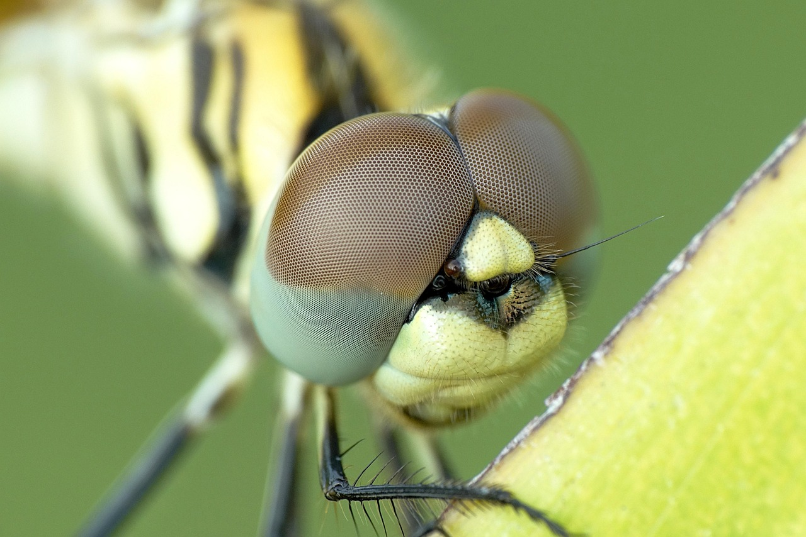
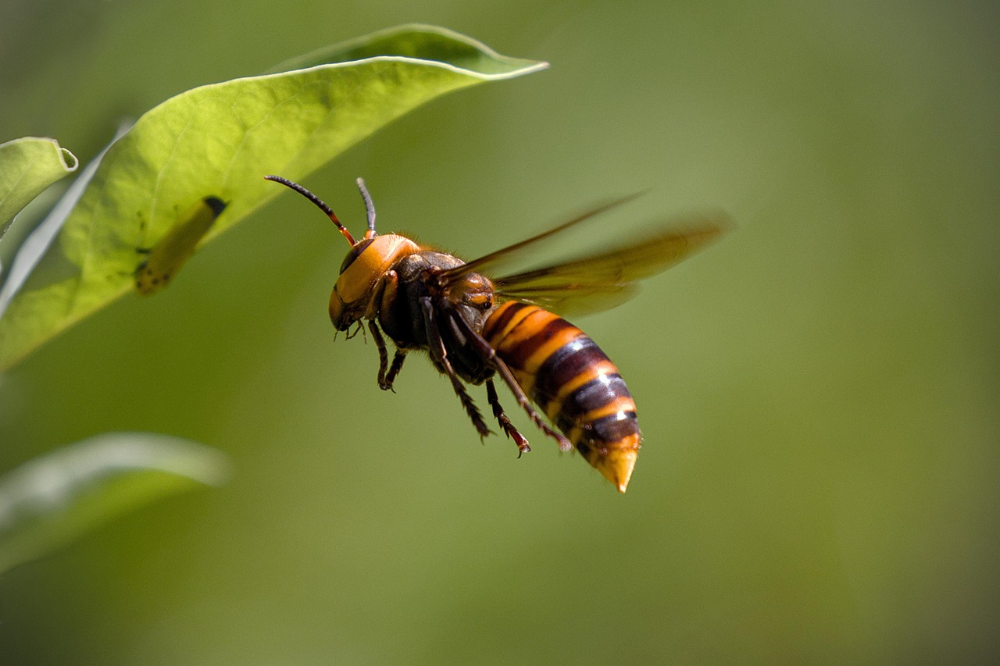

Caça no ar
0
%
de sucesso na caça

Processamento
não é força
Pixabay / Pexels
Cérebro da libélula
prevê a trajetória
intercepta
não persegue
4 asas
batem de forma independente
90°
em décimos de segundo

Ferrão
a arma da vespa
Pixabay / DerWeg
antes que a vítima reaja
tórax
asas
dezenas de insetos
por dia
Quem vence?
Vespa
O terror dos céus?
Libélula
Vespa: presas paradas
Libélula: mata no voo
Inscreva-se para ver o próximo duelo
A natureza não perdoa erro de cálculo.